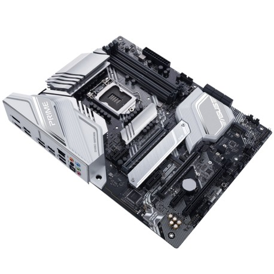

Carte mère
La carte mère est le premier composant que vous devrez choisir. C’est elle qui définira les dimensions de votre PC et les autres composants que vous choisirez pour votre ordinateur. Il s’agit donc d’un point critique, car votre carte mère doit être en mesure de délivrer les performances que vous attendez de votre machine. Elle alimente notamment votre processeur en électricité. Elle doit donc être en mesure de lui fournir la puissance requise pour qu’il fonctionne correctement. La carte mère définira également la technologie de mémoire (DDR4, DDR3 ou DDR2) que vous pourrez utiliser, et est susceptible de limiter le nombre de modules pouvant être installés, ce qui peut avoir un impact sur la fréquence du processeur et sur son efficacité. La carte mère dictera également le type de disques de stockage qui pourront être installés, à la fois en termes de format (2,5 pouces, mSATA ou m.2) et d’interface (SATA ou PCle). Vous devrez donc choisir votre carte mère en fonction des autres composants que vous souhaitez intégrer à votre PC, mais c’est par là que vous devez commencer.
